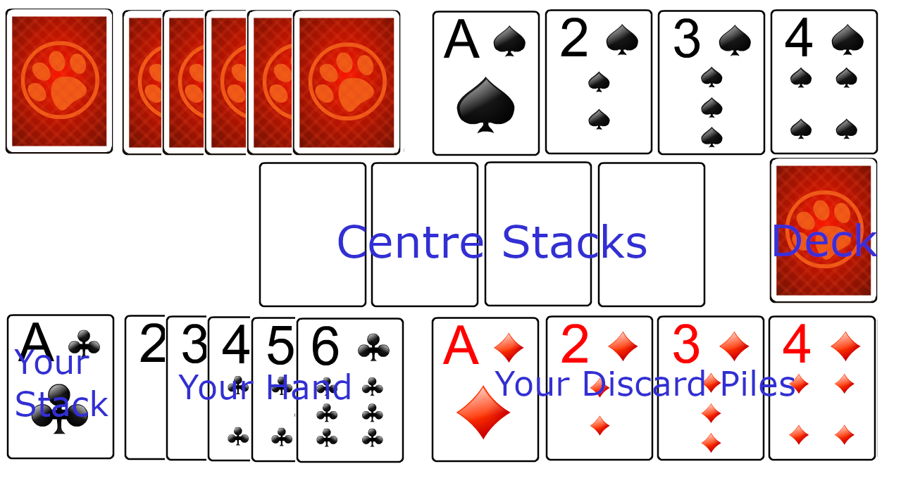

Spite and Malice
- The object is to be the first player to move all your cards
from the stack on the left (your play stack) to the centre stacks.
- Each turn begins with 5 cards in your hand.
- The first card on a centre stack must be an Ace and then in
ascending order up to the King. The card may come from your hand,
one of your 4 discard piles or your play stack.
- Before you can discard, you must have at least 1 card on
each of the 4 discard piles.
- Your turn ends when you "discard" - you play a card from
your hand to 1 of the 4 discard piles.
- Only the top card of a discard pile is available for play.
- Jokers are wild and can be used as any card.
- If you play all 5 cards from your hand before discarding,
you will recieve 5 more and your turn continues.
